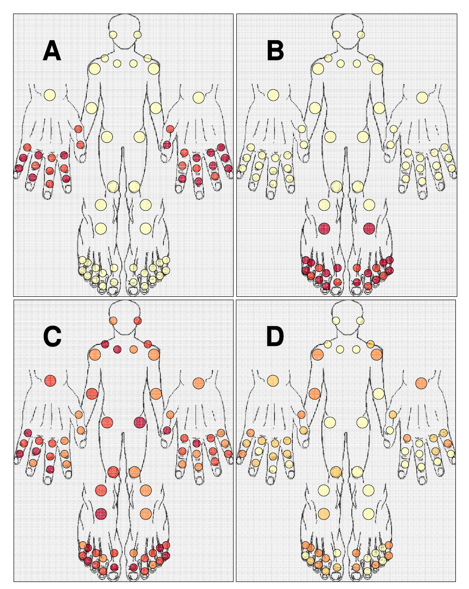

Blog
Intrusion Prevention: Potentielle Einbrecher automatisch aussperren
Webserver stehen in einer potentiell unsicheren Umgebung und sind daher durch «brute force»-Angriffe verwundbar. Ein Einbrecher versucht dabei mit «roher Gewalt» (simplem Ausprobieren Tausender möglicher Passwörter) in ein System einzubrechen.
Eine solche Attacke muss erkannt und unterbunden werden. Benutzer, welche innerhalb eines kurzen Zeitraumes übermässig viele fehlgeschlagene Login- Versuche machen, werden vom System für eine gewisse Zeit automatisch blockiert. Damit ist es einem Angreifer nicht mehr möglich, sich mittels «wahllosem» Ausprobieren von Passwörtern Zugriff zu verschaffen.
Fail2ban scannt die Logfiles des Webservers (nginx) und aktualisiert die Firewall-Regeln des Linux Kernel Firewalls (iptables). Damit steht das Intrusion Prevention System (Fail2ban) vor der Webapplikation (Pyramid) und schafft so eine weitere Schicht zum Einbruchsschutz.
Mit Fail2Ban lässt sich die Rate der Anmeldeversuche einschränken, es schützt aber nicht vor Risiken einer schwachen Authentifizierungsmethode. Der Zugriff auf unsere Webapplikation erfolgt daher zweistufig: nach dem Login mit Benutzername und Passwort muss sich der Benutzer mit seinem persönlichen YubiKey identifizieren.
Data-Driven Analysis in der Rheumaforschung
Dr. Daniel Stekhoven berichtet im SCQM Jahresbericht über einen datengetrieben Ansatz in der Datenanalyse. Mittels Clustering können Muster für die Klassifikation von PsA Patienten identifiziert werden.
Eine kurze Beschreibung des Ansatzes findet sich im SCQM Jahresbericht [PDF, S. 15]: http://www.scqm.ch/uber-scqm/annual-reports/annual-report-2013

Clinical Data Management in OCQMS
Data Entry
Data is entered at the contributing hospitals by study nurses and medical docters. The data entry forms have a clear structure that makes them easy to use for all users.
Data Validation
Data validation happens during data entry with validation rules on the online forms. Addition verification steps for the data can take place at the hospital level by requiring a user with a special role (signer) to sign and close a data entry (visit).
Data Cleaning / Discrepancy Management
For data that does not pass post-signing validation rules a request for clarification can be issued by the study monitor. The responsible user at the hospital level will be notified about this request. The whole communication on the request for clarification is tracked in the database.
Data Extraction / Research
Data of finalized visits are ready for download as CSV files. All data of the registry is mirrored to a separate export format (research database). During the transfer process data transformations take place to bring the data into a tabular structure and to anonymize personal subject data. To ensure full reproducability of data queries we create periodic snapshots of the research database. A snapshot is a complete immutable set of CSV files with a consistent naming convention (YYYY-MM-DD: e.g. 2014-01-01).
We support the Hacker Pledge
As a company, we pledge to support:
1. Initiative & curiosity
We expect hackers to be creative, contribute product ideas, and challenge the status quo. We encourage them to read tech news, explore new software, and attend a few events a year on work time to keep their skills up-to-date.
2. High-productivity working conditions
We let hackers choose the best tools available, both software and hardware. To avoid interrupts and foster high-quality work, we provide an environment as calm and stress-free as possible.
3. Openness & freedom of speech
We encourage our staff to share ideas and knowledge about technology through meetups and exchanges with other hackers, while respecting the company's expectations for confidentiality.
4. Giving back to the community
Given how essential Free Software is to a hacker's work, we strive to give back by contributing upstream, open-sourcing internal projects, and sponsoring conferences or community organizations.
Text by @hackerpledge www.hackerpledge.org
Realtime Benchmarking for Medical Data
OCQMS now offers some basic summary statistics for realtime explorative data analysis. Below you see a boxplot chart for a certain institution in comparison to all cohort data. The charts can also help to discover outliers and correct erroneous values if needed.
The summary statistics are implemented using the open source statistical programming language R (www.r-project.org).